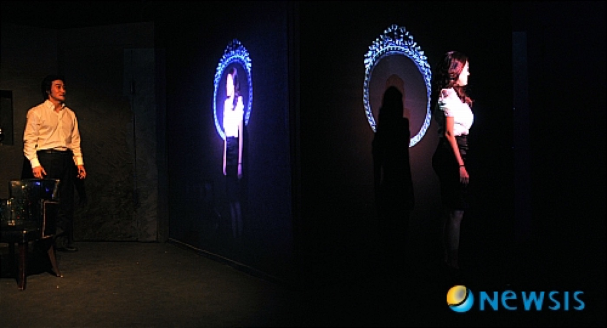
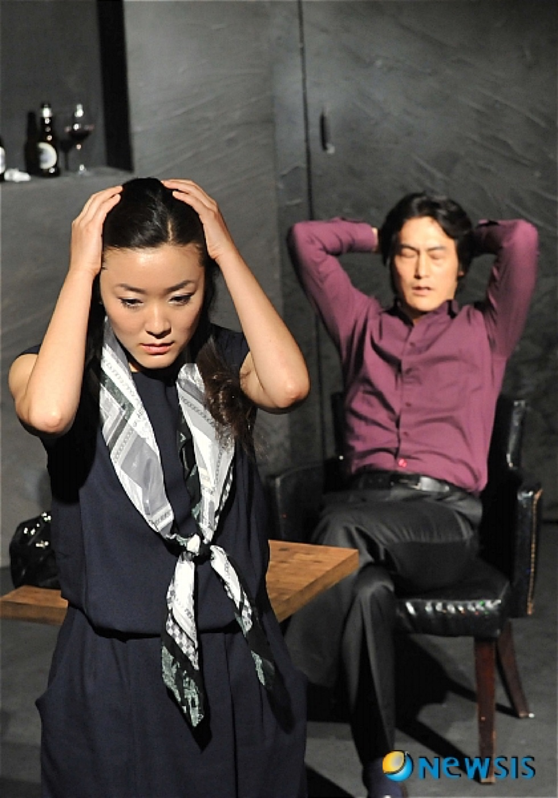
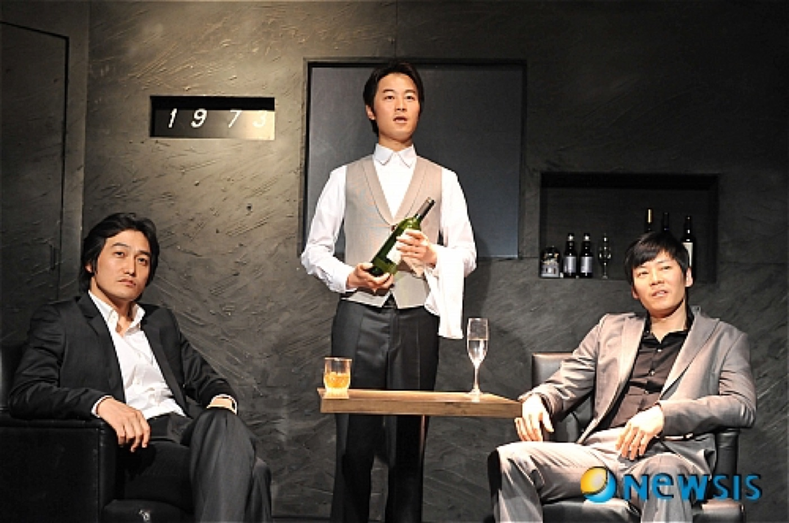

Performance — 2011
Betrayal배신 · 해롤드 핀터 · 극단 거미
“당신은 너무 아름다워요. 날 바라보는 자신을 한번 봐요.” — 불륜이 아니라, 그 곁의 배신과 나르시시즘을 들여다보는 무대.
‘You’re so beautiful. Look at yourself, looking at me.’ — A stage that looks past the affair to the betrayals beside it, and the narcissism beneath.
제리와 엠마는 7년의 밀애를 나눈 사이, 엠마와 로버트는 부부, 제리와 로버트는 결혼식 들러리를 설 만큼 절친한 친구입니다. 핀터의 《배신》은 이 삼각관계를 시간의 역방향으로 풀어냅니다 — 밀애가 식고 2년이 지난 1977년의 재회에서 시작해, 불륜이 처음 시작되는 1968년에서 끝나는 구조. 이 시간 구조는 관객의 관심을 불륜 자체에서 떼어내, 서로가 서로에게 저지르는 배신과 그 배신을 가능하게 한 나르시시즘에 집중하게 합니다.
물 위에 비친 자신과 사랑에 빠진 나르키소스처럼, 제리는 자신을 바라보는 엠마의 모습과 사랑에 빠집니다. 연출이 주목한 것은 바로 이 ‘나르시시즘의 비극성’입니다. 각 장마다 예외 없이 배신이 일어나고, 배신하는 자는 더 많은 지식으로 배신당하는 자를 조롱합니다 — 그러나 배신의 시작인 제리의 배신은 끝내 그 자신에게 되돌아옵니다.
Jerry and Emma have carried on a seven-year affair; Emma is married to Robert; Jerry and Robert are best friends, best men at each other’s weddings. Pinter unwinds the triangle backwards through time — opening on a reunion in 1977, two years after the affair has cooled, and ending in 1968 where it begins. The reversed structure pulls the audience away from the affair itself, toward the betrayals each commits against each — and the narcissism that made them possible. Like Narcissus with his reflection, Jerry falls in love with the image of Emma looking at him. What the direction fixed on was precisely this tragedy of narcissism: betrayal occurs in every scene without exception, the betrayer mocking the betrayed with superior knowledge — until Jerry’s first betrayal, the origin of them all, returns at last to betray him.
- 작
- Written by
- Harold Pinter
- 연출·영상
- Direction & video
- 김제민 Kim Jae Min
- 출연
- Cast
- 이석호 · 홍승일 · 김현미 · 박병주
- 드라마터그
- Dramaturg
- 임도현
- 스태프
- Staff
- 무대 이루현 · 음악 김병제 · 조명 최치환 · 오퍼 김동민, 박은주, 오혜주
- Set Lee Ru-hyun · music Kim Byung-je · lighting Choi Chi-hwan
- 후원
- Support
- 서울문화재단 우수예술축제육성지원 · 한국문화예술위원회
- Seoul Foundation for Arts and Culture · Arts Council Korea
- 키워드
- Keywords
- Harold Pinter · reversed time · narcissism · décalcomanie video
영상 — 나르시시즘의 시각화
The video — narcissism made visible
세 번의 데칼코마니
Three décalcomanies
나르시시즘을 무대 위에 드러내기 위해 데칼코마니 영상이 세 번 사용됩니다. 극의 처음, 배신을 시작한 제리는 나르키소스가 수면을 바라보듯 자신의 모습을 응시합니다. 4장의 끝에서는 로버트의 고뇌에 찬 모습이 무대를 채워, 다음 장에서 폭로로 배신당할 그의 내면을 감각적으로 예고합니다. 그리고 9장 — 영상은 처음엔 엠마가 머리를 빗는 거울이지만, 곧 제리와 엠마는 거울을 보듯 서로를 연기합니다. 서로의 실체가 아니라 자신들의 상상으로 만들어 낸 상대의 모습을 바라보는 나르시시즘. 데칼코마니가 깨지는 순간, 그 환영도 함께 깨집니다.
To surface the narcissism, a décalcomanie video appears three times. At the opening, Jerry — who began the betrayals — gazes at his own image as Narcissus gazed into the water. At the close of scene four, Robert’s anguished face fills the stage, a sensuous foreshadowing of the exposure to come. And in scene nine, the video is at first the mirror at which Emma brushes her hair — then Jerry and Emma play to each other as if to mirrors, each seeing not the other’s reality but the image of the other their own imagining has made. When the décalcomanie shatters, the illusion goes with it.
- 페스티벌
- The festival
- 혜화동1번지 5기동인 봄페스티벌 「나는 나르시시스트다」의 마지막 참가작. 임도현(문학박사)의 작품 해설 ‘배신과 배신 그리고 나르시시즘’이 프로그램에 실렸다.
- The closing entry of the Spring Festival ‘I Am a Narcissist.’ The dramaturg Lim Do-hyun’s essay ‘Betrayal, Betrayal, and Narcissism’ accompanied the programme.
공연 기록 — 연극실험실 혜화동1번지, 2011. 6.
Performance record — Theater Laboratory Hyehwa-dong 1st, June 2011

